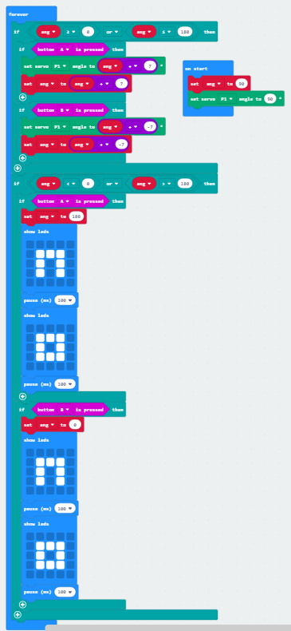

This project was all about making two Microbits communicate.
The Challenges
Initially, my group worked using the Microbit hardware, which turned out to be very frustrating. Downloading issues prevented us from working on our actual code for quite some time. In addition, we tried to use the app to control them, and it even worked for a bit, but our Microbits then kept disconnecting and any further work was impossible to do.
Once everything was working, we started to experiment with the code. We managed to get the servo to move on the button presses, using some help from other classmates, but it was very choppy. The angle would go past 0 or 180, which was very satisfying. We tried different values, loops, etc. but nothing worked.
After a while of trial and error, we figured out that showing LEDs was what slowed down the code. The Microbit had to pause to show the LEDs before moving on to the next movement. Once we took them out, everything worked seamlessly. We wanted to experiment with radio signals in the emulator, but the "tilt" function couldn't be simulated so we left it at that.
What I Learned
A lot! During this project, I not only learned how to use the Microbit software and hardware, but how limited radio signals can be used to send any information or command. This project taught me a lot about teamwork, since we had to have different code on different Microbits and a small error on one side would mess everything else up.
When things didn't work, we collaborated and thought together about how to solve the problems that arose. It was definitely frustrating at times, but having other people there made the process go faster.
Overall, I learned a lot about communication and signals that I'll be able to implement into future projects